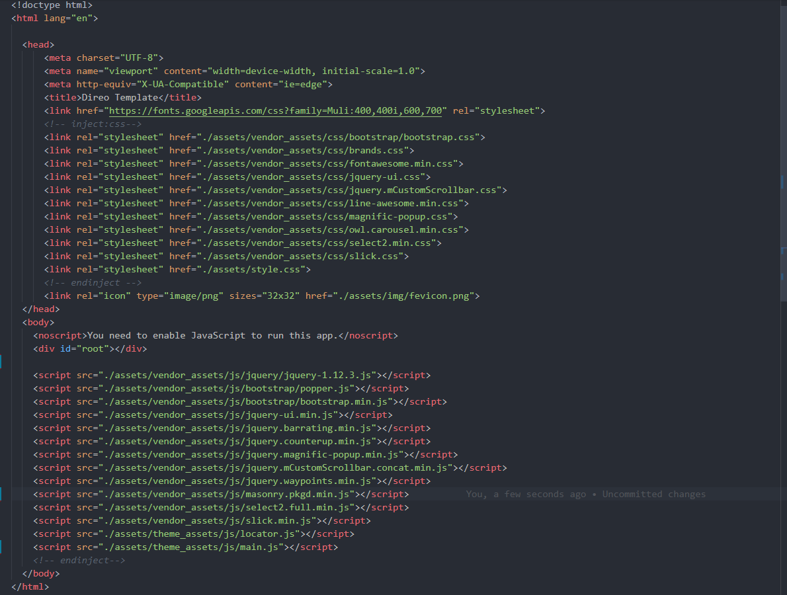
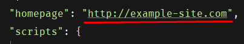
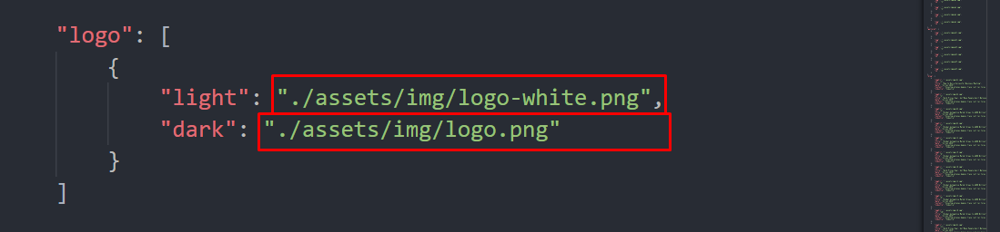
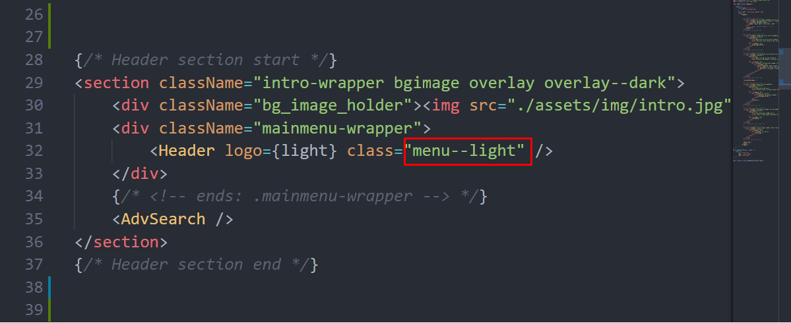
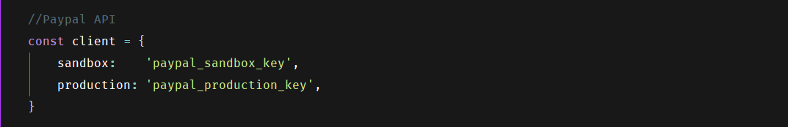

ToBePrint3D Documentation
- Getting Started
- Welcome
- Folder Structure
- Html Structure
- Install
- Install Node
- Upload to Server
- Theming & BS4 compatibility
- Gulp
- Navigation & Logo
- Payment Methods
- Google Map
- Changing Images
- Credit
Theme Name: ToBePrint3D - React Directory & Listing Template
Author: AazzTech
Author URI: http://aazztech.com
Created: 20-sep-2019
Version: 1.0.0
License: © AazzTech
Welcome
Thank You for purchasing this template, your support is truly appreciated! This document covers the installation and use of this template and often reveals answers to common problems and issues - read this document thoroughly if you are experiencing any difficulties. If you have any questions that are beyond the scope of this document, Please feel free to contact with our dedicated Support team via contact@aazztech.com
Template Features
ToBePrint3D is a Directory & Listing React template built with Bootstrap 4, React and React redux. The template heavily inspired by the Wordpress Directorist Plugin by Aazztech. We've developed it using latest trend-tools and best practices to leverage the development time and complexity also to ease customization process. We've used configurable SCSS for more control over templates style and layout. We structured it such a way that user can easily compose a new page using our component and customize it without too much hassle.
- Beautiful Design
- Clean Code
- HTML5 & CSS3
- Extensive Documentation
- Made With SASS
- RTL Script Supported
- Task automation with gulp
- Bootstrap 4 compatible.
- Configurable SCSS
- Dynamic Dashboard
- React Redux
- React Owl Carousel
- Listing Details
- Stripe and Paypal Payment Method
- W3C validated code
- Easy to customize
- Beautiful Line awesome icons
- Free google fonts
- Huge number of shortcode elements
- Fully Responsive Design
- All files are well commented
- Crossbrowser Compatible with IE10+, Firefox, Safari, Opera, Chrome
- And lot more...
Folder Structure
├── public
│ │ ├── assets
| | | |______img/
| | | |______vendor_assets (third party plugins ans assets)
| | │ │ ├── css
| | │ │ │ ├── bootstrap
| | | │ | │ ├── config.bs.scss (This file controls the style configuration of the entire theme)
| | | │ │ ├── js
| | | │ │ ├── Fonts
| | | │ ├──theme_assets (Themes own assets)
| | | │ │ ├── sass (This directry contains all the styles of this theme)
| | | │ │ ├── js (Custom script and initialization)
| | | │ │__style.css
| | |
| | |___index.html
| | |___manifst.json
├── src
| |___component (All the section file and content here)
| |___container (All component state manage here, You can change all data in here, use props)
| |___pages (All pages of the theme)
| |___app.js
| |___index.js
| |___data.json (there are all data which use in state)
├── gulpfile.js
├── package.json
├── package-lock.json
HTML Structure
This Template has a Responsive layout and is based on the Bootstrap Framework. For more information about this visit Bootstrap Scaffolding.
All the files and folders are organized appropriately. These files are essential for proper working of the template. You can make changes in the files as shown below in this document but please don't alter the file structure, that is, don't remove or move any files from css, js and images folder unless instructed in this document.
please change mata tag content name description, author, summary, Classification to improve your SEO :)
Installing Template
After unzip the download pack, you'll find a Template Folder ( Tejarat ) with all the files. You can view this Template in any browser, you can display or edit the Template without an internet connection. Please follow the Install Node guide for more information.
Installing Node
This template requires node to run on localhost. And it usages gulp, npm packages to perform different task, So install node and npm first. Please follow the guide.
1. Installing node> Go to https://nodejs.org/en/ and download the appropriate version for you OS.
2. Installing Gulp> go to command and run npm install -g gulp it will install gulp globally
> Now navigate to the Tejarat folder and run npm install, it will install
all the dependecies
This project was bootstrapped with Create React App. To learn more please follow their docs here. Now, In the project directory, you can run:
4. Available Commandsnpm start
> Runs the app in the development mode. Open http://localhost:3000 to view it in the browser. The page will reload if you make edits. You will also see any lint errors in the console.
npm test> Launches the test runner in the interactive watch mode. See the section about running tests for more information.
npm run build> Builds the app for production to the build folder. It correctly bundles React in production mode and optimizes the build for the best performance. The build is minified and the filenames include the hashes. Your app is ready to be deployed! See the section about deployment for more information.
Upload to Server
First of all, Unzip the download pack and find the package.json file in the root of the folder.
Then open it in any text editor and change the "homepage" url to your site url.

Now go to command and run npm run build. Now a ready to upload build version of this template will
be generate in the build folder. Upload the files of that folder to your web server via ftp or
whatever you prefer.
We developed our template with Creat React App js, for more info please follow their documentation here
https://github.com/facebook/create-react-app
Configuring style & Bootstrap compatibility
Instead of overriding Bootstraps components. We have made it compatible with theme using
Bootstraps native scss varibles.
and it's recommended by Bootstrap. This way we are able to manage leveraging decent ammount of
css , as there is no overriding.
And we made it centrally configurable with config.bs.scss file in
public/assets/vendor_assets/css/bootstrap/ directory
This file contains and controls all the Bootstraps default components.It also contains the color scheme, font, spacing and other common staff.If you want customize anything of Bootstrap, you can literally do it here by overriding bootstrap varibles.
2. Where and to find and how to customize Bootstraps SCSS variablesGo to public/assets/vendor_assets/css/bootstrap/scss/_variables.scss and search for the
variable
or component name.
Evey components configurable property will be avaible in this file. You can just copy the
variable form there and paste it in config.bs.scss removing the default flag and assigning a new
value. For Example, here I've redefined color scheme for this theme:

Gulp tasks
Gulp is amazing tools for task automation. It automates time-consuming tiresome task for you. It helps keep the concentration on actual work by taking care of many redundant and boring task such as sass compilation, css compression, js/css injection etc. Different version generation. IE (build, dist etc)
> gulp
Gulp command is equivlent to gulp default it runs the default task that has
been assigned to it.
In this particular project Gulp serves the project in the browser, watches for
sass,css,js,html changes and synchronizes
and excutes task associated with it.
> gulp rtl
gulp rtl command generate an rtl version of sytle.css and bootstarp.css files. Use this command after adding or editing codes to regenerate those file again if necessary.
Update Logo
How to change logo. go to src/softdata.json Opne file and change the logo image link.
 you can see a class logo inside it put your own image path. you can use text also.Update Navigation
To change Navigation, go to src/components/page/ your page and change the nav class "menu--light / menu--dark" from Header Tag.
 you can see a class logo inside it put your own image path. you can use text also.Navigation structure
Path: src/components/layout/navbar/navItem

Change the navigation according to your content, also you can add or remove according to your needs. Smoothscroll will work automatically. make sure you keep the class scrolling and specific section id
Configure Paypal and Stripe
Follow the below steps to configure the Paypal and Stripe API
> PaypalGo to src/components/content/element/transection and change the API key as shown below.
> Stripe
Go to src/components/content/element/transection and change the API key as shown below.

Update Your map location
To update your map location and API please change your location Longitude, Longitude and API key as shown
in the image below. to do that go to
src/content/element/map
and change the lat lang of with your desired location lat-lang.

and update
Change Images and Texts
Go to "src" folder, you will find folders like components, container and pages, containing all the code blocks. You can easily change anything of your need from the desired files and folders.To Change your data for any section follow this instruction...... or you can use data.json file to change data.
To change images find the data.json file located in the src folder and there change the url of the respective image.